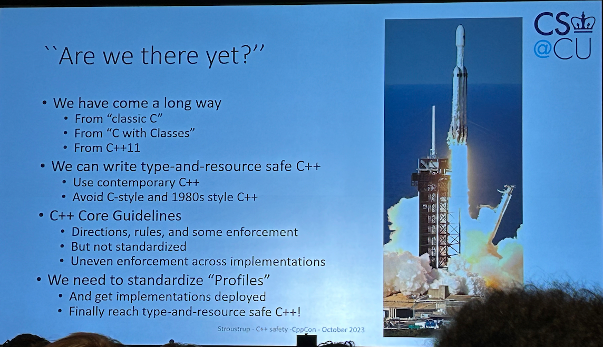
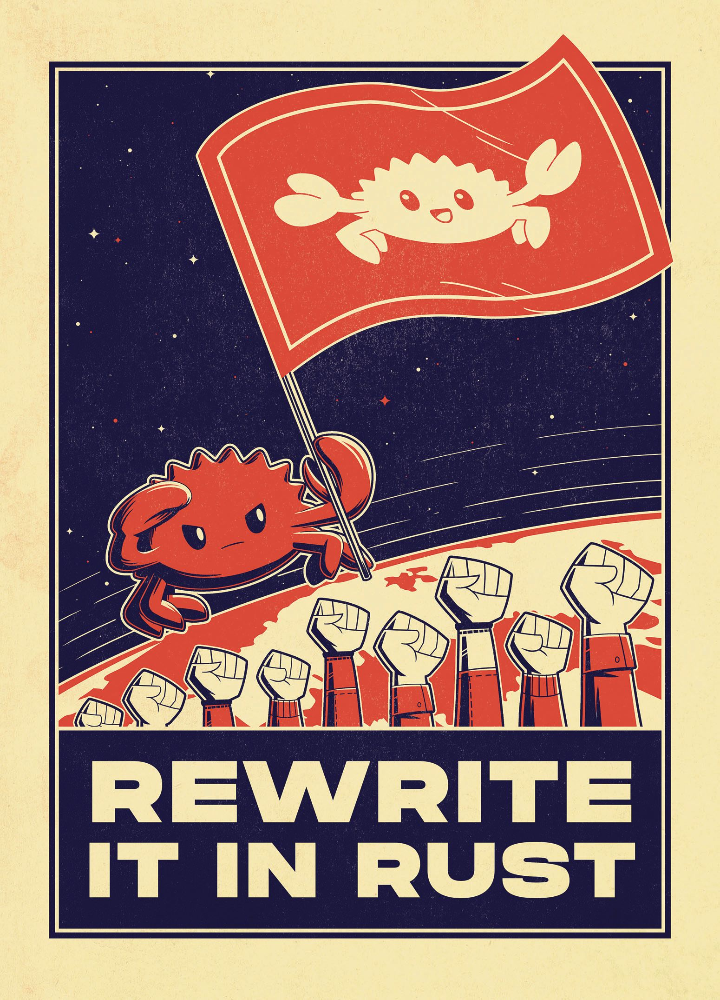
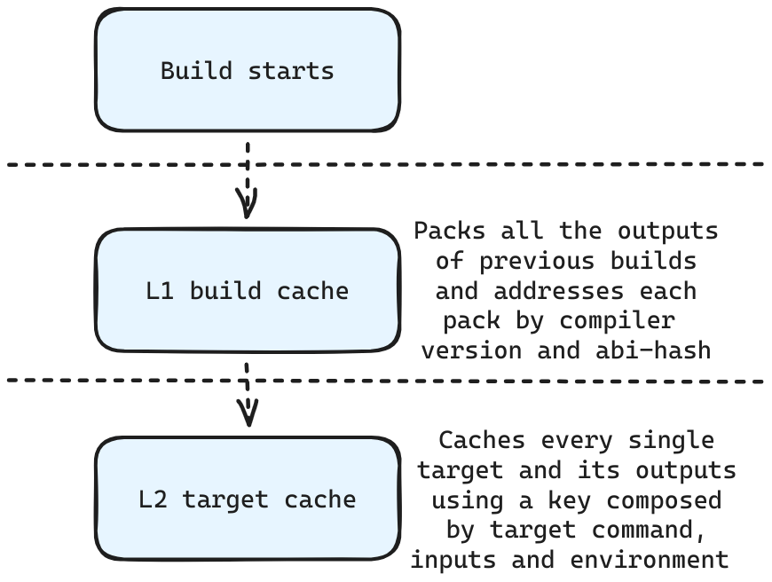

Reliable, Fast and Safe Builds
Damien
co-founder, tipi.build
@daminetreg / damien@tipi.build
Antonio
DevEx Engineer, EngFlow
@TheGrizzlyDev / antonio@engflow.com
A love ❤️ letter to CMake
Giving CMake Superpowers 🚀
Thank you CMake 🙏🏼
autotools, qmake and SCons almost disappeared 🎯
Safety
C++ cares about Safety
- Keynote: All the Safeties, Sean Parent - C++ on Sea 2023 :
youtu.be/BaUv9sgLCP - C++ and Safety, Timur Doumler - C++ on Sea 2023 :
youtu.be/imtpoc9jtOE - Safety and Security: The Future of C++, JF Bastien - CppNow 2023 :
youtu.be/Gh79wcGJdTg
Are we there yet ?

Are we there yet ?
| Are We "Thing" Yet | C++ |
|---|---|
| Are We Web Yet | ✅ |
| Are We Game Yet | ✅ |
| Are We Async Yet | ✅ |
| Are We GUI Yet | ✅ |
| Are we stack-efficient yet? | ✅ |
| Are we safe yet? | 🦆 |
Are we safe yet ?
We could !
It's more configuration work 🐌
Are we safe yet ?
We should !
What is Safety ?
- Type Safety
- Memory Safety
- Lifetime safety
- Bounds safety
- Initialization safety
- Object access safety
- Thread Safety
- Arithmetic safety
- Definition safety
Software Supply Chain Safety ?
- Reproducibility
- Traceability
- Release delivery time
YOU DON'T NEED TO

Achieve safety in C++ today
Achieve safety in C++ today
with the CppCoreGuidelines

Achieving safety in C++ today
with CMake, Clang Tidy and the CppCoreGuidelines
set(CMAKE_CXX_CLANG_TIDY
clang-tidy -checks=-*,cppcoreguidelines-*)
Achieving safety in C++ today
with CMake
Achieving safety in C++ today
Let's tackle first
- Memory Safety
- Arithmetic Safety
Sanitizers for C++ builds
- AddressSanitizer (ASan)
- UndefinedBehaviorSanitizer (UBSsan)
- ThreadSanitizer (TSan)
- LeakSanitizer (LSan)
- MemorySanitizer (MSan)
Using LLVM Sanitizers in your CMake
project(safepp)
find_package(Sanitizers MODULE REQUIRED)
add_executable(use-after-free test/use-after-free.cpp)
# enable sanitizers
add_sanitizers(use-after-free)
ASan, TSan, UBSan are incompatible with each others ❌
Multiple builds and test runs
Separate CMake toolchain files
sanitize-ub.cmake :
set(SANITIZE_UNDEFINED TRUE CACHE BOOL "" FORCE)
sanitize-address.cmake :
set(SANITIZE_THREAD TRUE CACHE BOOL "" FORCE)
Multiple builds and test runs
Separate CMake toolchain files
sanitize-memory.cmake :
set(SANITIZE_MEMORY TRUE CACHE BOOL "" FORCE)
sanitize-thread.cmake :
set(SANITIZE_THREAD TRUE CACHE BOOL "" FORCE)
Learning from other
build-systems
Parallelism
How many independent targets can a build system run concurrently at most?
Parallelism
Level 1 - Gradle
. ├── app │ ... │ └── build.gradle ├── lib │ ... │ └── build.gradle └── settings.gradle
Parallelism
Level 1 - Gradle
Sub-project level parallelism. It is very limited as projects have very low granularity and are limited in numbers. It is disabled by default
Parallelism
Level 2 - Make, FASTBuild
Targets are more granular and the size of the job pool can be specified by a flag (-j/--jobs)
Parallelism
Level 3 - Bazel
Same as the level before, but resource-intensive targets can reduce the level of parallelism on-demand
Parallelism
Level 4 - Ninja
You can define separate job-pools each of which with a different size (eg: link=1 and cc=16)
Will it CMake?
Job pools can be used when compiling...
set_property(GLOBAL PROPERTY JOB_POOLS
compile=16
link=1
codegen=16)
set_property(TARGET atarget
PROPERTY JOB_POOL_COMPILE compile)
set_property(TARGET atarget
PROPERTY JOB_POOL_LINK link)
add_custom_target(protocgen
COMMAND protoc --cpp_out=./out server.proto
JOB_POOL codegen
SOURCES server.proto)
Will it CMake?
... and linking ...
set_property(GLOBAL PROPERTY JOB_POOLS
compile=16
link=1
codegen=16)
set_property(TARGET atarget
PROPERTY JOB_POOL_COMPILE compile)
set_property(TARGET atarget
PROPERTY JOB_POOL_LINK link)
add_custom_target(protocgen
COMMAND protoc --cpp_out=./out server.proto
JOB_POOL codegen
SOURCES server.proto)
Will it CMake?
... and pretty much anywhere else 😁
set_property(GLOBAL PROPERTY JOB_POOLS
compile=16
link=1
codegen=4)
set_property(TARGET atarget
PROPERTY JOB_POOL_COMPILE compile)
set_property(TARGET atarget
PROPERTY JOB_POOL_LINK link)
add_custom_target(protocgen
COMMAND protoc --cpp_out=./out server.proto
JOB_POOL codegen
SOURCES server.proto)
Reproducibility
Given the same inputs and configuration, a target should yield identical outputs
Reproducibility
Level 1 - Make, Ninja, FASTBuild
Provide no real facility to ensure reproducibility and, thus, hermeticity is something that the developers have to take care of
Reproducibility
Level 2 - Meson
Allows you to query and introspect tools during a build and configure them to get reproducibile results as well as define toolchains
Reproducibility
Level 3 - Gradle
Predefines robust and easy to configure toolchains out of the box. This way builds do not normally rely on any system-wide installed tools/libraries that can change between different workstations
Reproducibility
Level 4 - Bazel
Toolchains are treated as normal inputs. This trivially allows defining custom toolchains whilst keeping the same level of reproducibility
Will it CMake?
Actually, yes! But we have a few problems to fix 😎
Will it CMake?
Problem 1: file ordering matters
Building `a.cpp` and `b.cpp` can yield different results from building `b.cpp` and `a.cpp`!
Will it CMake?
Problem 1: file ordering matters
Luckily CMake forces you to write input sources manually, so ordering is guaranteed!
Will it CMake?
Problem 2: __DATE__ and __TIME__ macros
Will it CMake?
Problem 2: __DATE__ and __TIME__ macros
MSVC
add_link_options("/Brepro")
Will it CMake?
Problem 2: __DATE__ and __TIME__ macros
GCC (via an environment variable)
SOURCE_DATE_EPOCH=1621012303
Will it CMake?
Problem 2: __DATE__ and __TIME__ macros
GCC + Clang
# Rewrite __DATE__
add_definitions(-D__DATE__="May 14 2021")
add_definitions(-D__TIME__="17:11:43")
add_compile_options(-Wno-builtin-macro-redefined)
Will it CMake?
Problem 3: Randomness when using `-flto` with GCC
LTO on GCC will produce random symbols
Will it CMake?
Problem 3: Randomness when using `-flto` with GCC
set(APP_SOURCES
app.cpp
lib.cpp)
foreach(_file ${APP_SOURCES})
file(SHA1 ${_file} sha1sum)
string(SUBSTRING ${sha1sum} 0 8 sha1sum)
set_property(SOURCE ${_file}
APPEND_STRING PROPERTY
COMPILE_FLAGS
"-frandom-seed=0x${sha1sum}")
endforeach()
Will it CMake?
Problem 4: __FILE__ macro
The __FILE__ macro is very likely to change between different workstations and thus produce different results
commit-id addressable builds
Git + Ninja + cache packs ✅
__FILE__ problem solved 🫡
Caching
How many targets can a build system avoid rebuilding?
Caching
Level 1 - Gradle
Once again the low level of granularity means that even small changes will rebuild very large targets
Caching
Level 2 - Make, Ninja
Check timestamps on the individual input files and rebuild targets if any change. Caching is completely file-system based and uses the mtime of a file to detect if it has changed since the last build
Caching
Level 3 - FASTBuild
Supports the same type of file-system caching as the previous level and adds support for distributed caching
Caching
Level 4 - Bazel
Supports file-system and distributed caching as with the previous level, but based on the digest of the input files' content rather than mtime. Bazel also has an in-memory cache for large build graphs
Will it CMake?
By using Make or Ninja we get file-system caching out-of-the-box
Will it CMake?
However, we can replace the standard CMake client with tipi. Engflow and Tipi partnered to bring remote execution and caching to CMake!
L2 Cache
Rationale
- L1 cache
- permits fast build / install tree clean restore
- L2 cache
- less cores required for parallel CI jobs
Dependency management & Software Supply Chain Safety
How a build system handles 3rd-party code
Dependency management
Level 1 - Make, Ninja, FASTBuild
No support at all, the developer gets to decide how to handle dependencies
Dependency management
Level 2 - Gradle
Dependency management focuses on handling jars but is very crude everywhere else
Dependency management
Level 3 - Meson, Bazel
Both provide somwhat extensible mechanisms to resolve dependencies for multiple languages and both provide centralised repositories of dependencies tweaked to better work with the respective build systems
Will it CMake?
Software Supply Chain
But the package management in C++ is 🙉
Actually we have one
- CMake is the de-facto standard for C++ builds
- It has FetchContent and we love it ❤️
FetchContent
Include(FetchContent)
FetchContent_Declare(
Boost
GIT_REPOSITORY https://github.com/boostorg/boost.git
GIT_TAG boost-1.80.0
)
FetchContent_MakeAvailable(Boost)
find_package(boost_filesystem CONFIG REQUIRED)
target_link_libraries(app Boost::filesystem)
FetchContent is kinda slow
🕠
FetchContent is kinda slow
🕠
- ⚡ No problem : we can optimize it
- Let's use CMake SET_DEPENDENCY_PROVIDER
Intercept FetchContent calls
macro(tipi_provide_dependency method package_name)
set(oneValueArgs
GIT_REPOSITORY
GIT_TAG
)
cmake_parse_arguments(
ARG "${options}" "${oneValueArgs}"
"${multiValueArgs}" ${ARGN} )
# Do something with ${ARG_GIT_REPOSITORY}
FetchContent_SetPopulated( ${package_name} )
endmacro()
Install dependency provider
dependency_provider.cmake
cmake_language(
SET_DEPENDENCY_PROVIDER tipi_provide_dependency
SUPPORTED_METHODS
FETCHCONTENT_MAKEAVAILABLE_SERIAL
)
list (APPEND CMAKE_PROJECT_TOP_LEVEL_INCLUDES
dependency_provider.cmake)
Let's install Boost
Include(FetchContent)
FetchContent_Declare(
Boost
GIT_REPOSITORY https://github.com/boostorg/boost.git
GIT_TAG boost-1.80.0
)
FetchContent_MakeAvailable(Boost)
Advantages
- No lock-in, pure CMake
- Rebuild from sources if needed
- Efficient and secure build caching
Build Provenance & Traceability
SBOMs
Build Provenance & Traceability
SBOMs
- Software Supply Chain Safety
- NTIA Compliance
Software Supply Chain
But the package management in C++ is 🙉
Actually we have one
But the package management in C++ is 🙉
- CMake is the de-facto standard for C++ builds
- It has FetchContent and we love it ❤️
SBOMs generation
include(sbom)
sbom_generate(
OUTPUT
${CMAKE_INSTALL_PREFIX}/sbom-${GIT_VERSION_PATH}.spdx
LICENSE MIT
SUPPLIER tipi
SUPPLIER_URL https://tipi.build
)
reuse_spdx()
add_executable(app app.cpp)
install(
TARGETS app
EXPORT "${targets_export_name}"
RUNTIME DESTINATION "bin"
)
sbom_add(TARGET app)
sbom_finalize()
Distributed/remote builds
The ability of a build system to cache and/or run targets on a shared distributed system
Distributed/remote builds
The ability of a build system to cache and/or run targets on a shared distributed system
* also known as the thing that pays my salary :)Distributed builds
Level 1 - Make, Ninja, Meson
No distributed caching or execution out of the box, everything runs locally
Distributed builds
Level 2 - Gradle
Has support for remote caching, but no remote execution of build targets. Once again the low level of granularity negatively impacts the potential of this feature
Distributed builds
Level 3 - FASTBuild
Supports both distributed execution and caching, however it is limited to just a list of well-known compilers when it comes to remote execution
Distributed builds
Level 4 - Bazel
Supports both distributed builds and caching for arbitrary tools, including compilers, linkers, tests and whatever you can think of
Will it CMake?
100%! We can combine Engflow's Remote Execution, which uses the same RE level protocol Bazel adopts, and tipi's single instance approach.